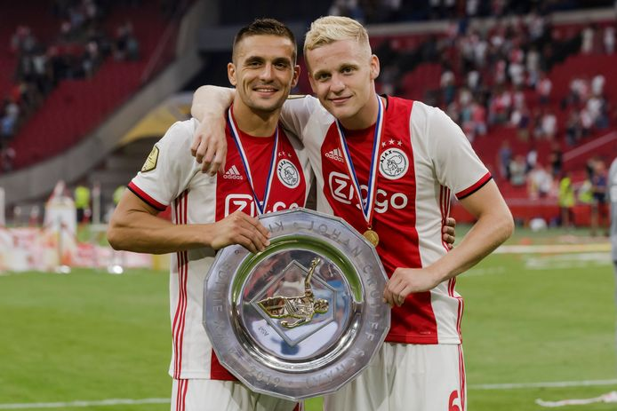
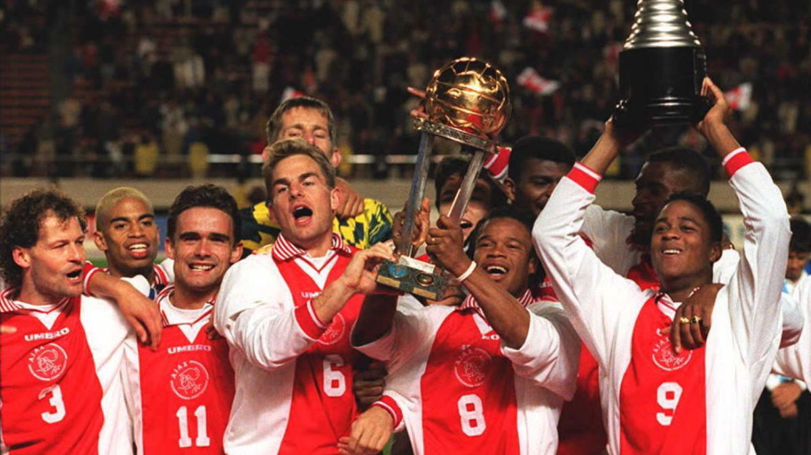
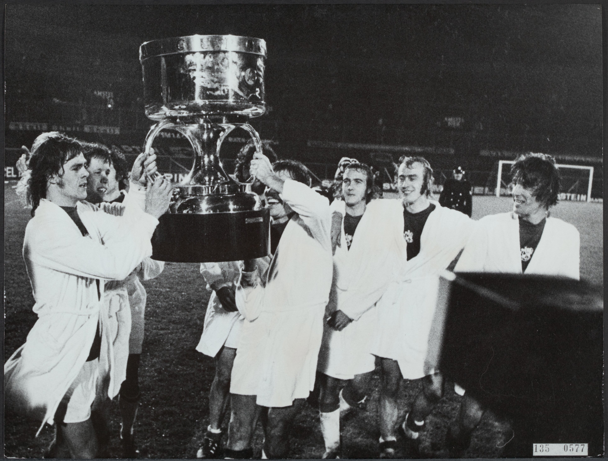
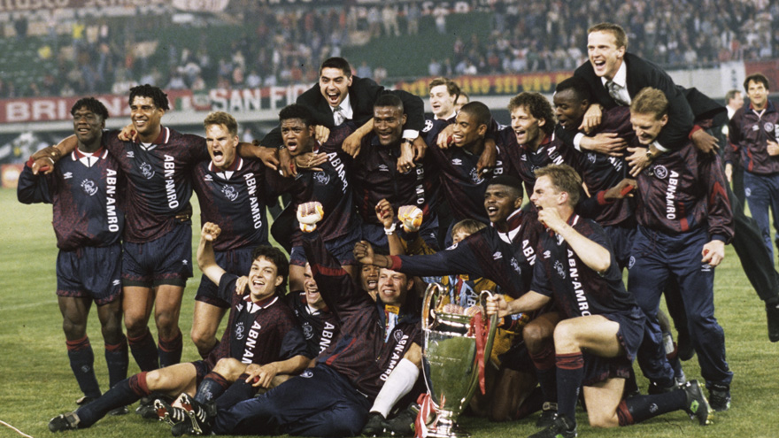
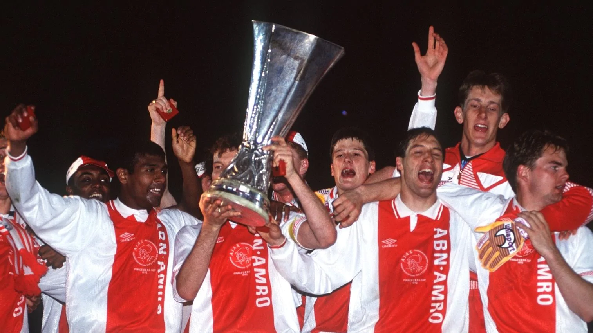

Landskampioen (35)
1918, 1919, 1931, 1932, 1934, 1937, 1939, 1947, 1957, 1960, 1966, 1967, 1968, 1970, 1972, 1973, 1977, 1979, 1980, 1982, 1983, 1985, 1990, 1994, 1995, 1996, 1998, 2002, 2004, 2011, 2012, 2013, 2014, 2019, 2021.
KNVB Beker (20)
1917, 1943, 1960, 1967, 1970, 1971, 1972, 1979, 1983, 1986, 1987, 1993, 1998, 1999, 2002, 2006, 2007, 2010, 2019, 2021. 
Cruijff Schaal (9)
1993, 1994, 1995, 2003, 2005, 2006, 2007, 2013, 2019.
Wereldbeker (2)
1972, 1995.
Europese Supercup (3)
1972, 1973, 1995.
Champions League (4)
1971, 1972, 1973, 1995.
Uefa Cup (1)
1992